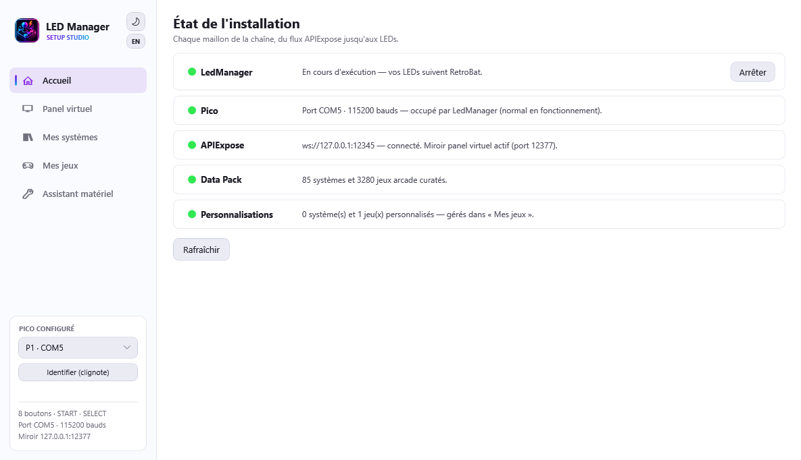
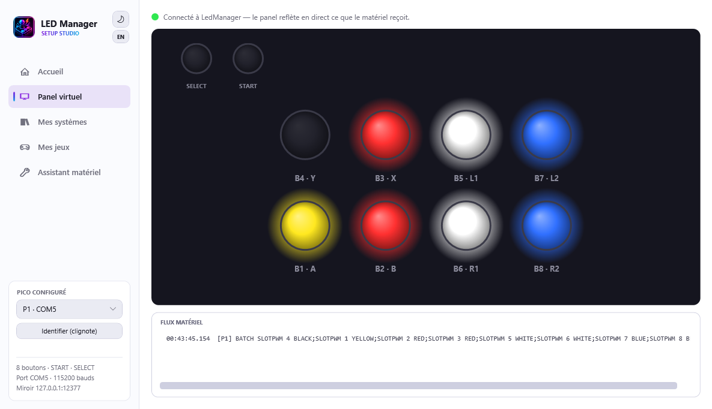
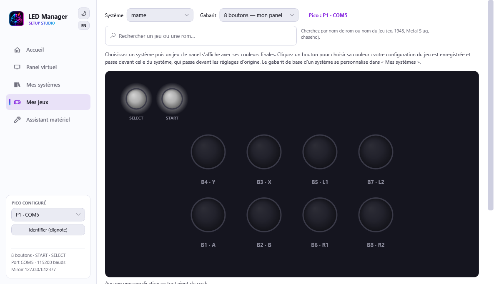
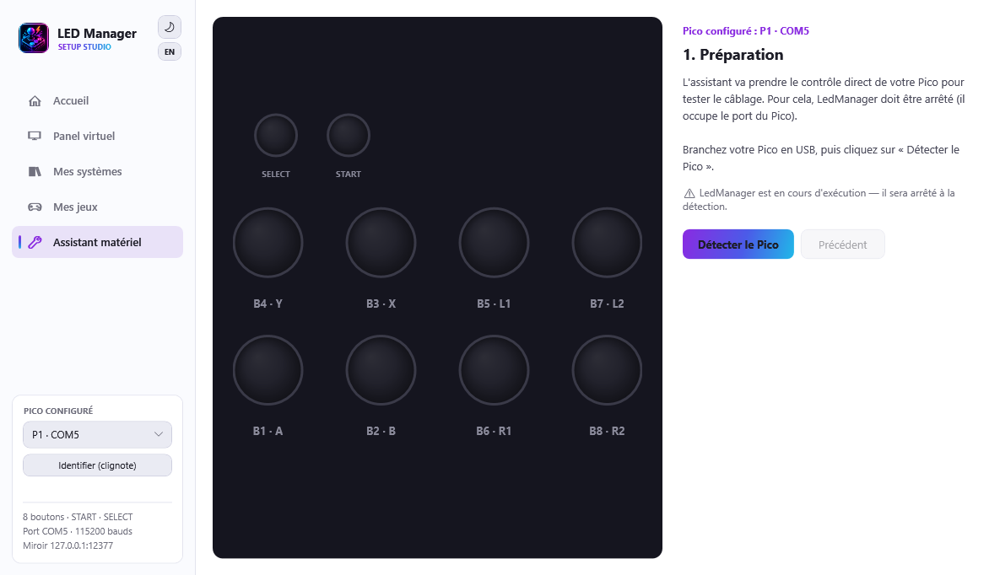

The setup assistant
LedManagerSetup.exe, at the root of the plugin, is the visual tool that guides you from wiring to going live - without editing a single file by hand.
It offers two modes in the sidebar:
- Virtual panel: a real-time mirror of your panel. While LedManager is running (in a game or the menus), it shows exactly the colors sent to your LEDs. Great to check everything reacts, or to debug without staring at the cabinet.
- Hardware assistant: the guided flow to configure and test your Pico.
French or English
The tool follows RetroBat's language (EmulationStation setting), else Windows'. To force it: LedManagerSetup.exe --lang fr or --lang en.
Home: installation status

The landing tab checks every link of the chain: LedManager (with Start/Stop buttons), the Pico (configured port, on-demand detection while LedManager is stopped), APIExpose and the virtual panel mirror, the Data Pack (available curated systems and games) and your customizations. A red link = the first thing to fix.
The virtual panel

Open LedManagerSetup.exe while RetroBat is running: the dot turns green and the virtual panel animates in sync with the real one. It shows the recommended standard arrangement (SELECT/START top-left, then the two rows).
A slight in-game slowdown is normal
The tool runs at low priority so it doesn't disturb emulation, but keep it closed during serious play - it's a tuning tool.
My games: customize the colors

The My games tab shows each system's panel as the pack defines it (see Per-system panels), and lets you change its LED configuration: click a button, pick its color from the firmware palette (19 colors), save. Your configuration is written as a sparse patch to overrides\systems\<system>.json - the pack is never modified, and LedManager applies the patch from the next game selection, no restart needed.
- The Panel selector is a preview: 2/4/6/8 buttons and historical variants (Score Master, Fighting Stick…). The override applies to the whole system.
- Arcade game: type a rom name (mslug, chasehq, seawolf…) to edit one specific game among the 3280 curated arcade games (the only ones with a per-game LED configuration; their media live in
media\systems\arcade). The displayed panel is exactly what the runtime resolves (pack + system patch), and your LED configuration is written tooverrides\games\arcade\<rom>.json- it beats the system patch. LedManager accepts botharcadeandmameas folder names. - Console games: no per-game LED configuration in the pack - customize at the system level. A per-console-game patch remains possible by hand in
overrides\games\<system>\<rom>.json(e.g.games\snes\smw.json, same format), the runtime applies it. - "Original color" in the palette removes a button's override; "Back to pack colors" deletes the whole patch.
- "Test on the real panel" stops LedManager for the duration and sends your colors to the Pico: they follow your clicks live on the real buttons.
The hardware assistant

The assistant takes direct control of your Pico to test it. Since LedManager holds the Pico's port, the assistant stops it automatically when the test starts (your LEDs go dark during configuration - that's normal).
1. Preparation
Plug your Pico in over USB (a data cable, not a charge-only one), then click Detect the Pico. The assistant:
- stops LedManager to free the port;
- searches the serial ports for your Pico and reads its firmware version;
- restarts the driver and lights the whole panel white.
If nothing is detected, the "Install the firmware" button appears: the assistant deploys the panel firmware to the Pico itself (over the MicroPython serial link), then re-runs detection. For a blank Pico (never flashed), plug it in while holding BOOTSEL: the assistant guides you through dropping MicroPython once (automatic copy if a .uf2 file sits in fw\), then installs the panel firmware. Also check the USB cable (data, not charge-only) - details in Hardware.
Before you start, pick the test's scope: Full test (the whole run), LED test only (redo just the LED wiring, step 4) or Cartography only (redo just the inputs, step 5). Handy to replay a single step after swapping a panel or an encoder.
No Pico? The cartography still works
Cartography only drives no LED at all: it merely reads what your pad or encoder sends. It therefore needs no Pico, and the assistant carries on even when detection fails - the virtual panel is what tells you which button to press. A panel with no LEDs whatsoever can be calibrated end to end this way. If a Pico does answer, all the better: the expected button lights up for real as well.
2. Panel test
Your buttons should all be lit white. That confirms power and firmware work. If some stay dark, it's a wiring or power issue (see Troubleshooting).
3. Color test
The assistant lights each channel in turn: the whole panel in red, then green, then blue. The virtual panel shows the expected color; if the real panel shows something else (the R/G/B wires got crossed during assembly), report the color you actually see.
The assistant deduces the real wire order and fixes the channel order in the configuration - no re-soldering. The test then re-runs to confirm.
Two independent circuits
Each button has two separate circuits: the LED (what lights up) and the switch (what is sent to the game when you press). Step 4 checks the first, step 5 the second - the two can be wired differently, hence two tests.
4. LED wiring test
This is the clever step: one button lights up green on your real panel, one at a time. Each time, click the virtual button that matches the one lit for real. A cyan blink confirms your click, both on screen and on the panel.
START and SELECT are tested at the end of the sequence.
The assistant thus compares your real wiring to the expected arrangement. If differences show up (two swapped wires, say), the "Fix automatically" button rewrites the software wiring ([GPIO:P1] in PicoCommandSender.ini, with a .bak backup) so every button answers at its place - nothing to dismantle. The test re-runs to confirm.
5. Input cartography
The reverse of the previous step: the expected button blinks green on the virtual panel - and lights up on your real panel at the same time if a Pico is present - and this time you press it. The assistant reads the identity your pad/encoder emits - exactly as RetroArch sees it (through RetroArch's SDL and RetroBat's gamecontrollerdb.txt) - and builds the input cartography: which physical button triggers which in-game action. START and SELECT/COIN are included.
The blink alone is enough to follow along: that is why this step does without LEDs, and therefore without a Pico.
A summary appears, warning you if two buttons send the same thing, or if START/SELECT don't emit what's expected (encoder wiring to review). Then "Write the cartography & regenerate":
- saves this cartography per player (your Picos and encoders may be wired differently from one player to the next);
- regenerates the mapping files for the three targets described below, with a progress bar showing the system or game being processed;
- stays reversible: "Undo this cartography" restores the previous state.
What the regeneration writes, and for whom
One and the same arcade game is not driven the same way depending on what runs it. The assistant therefore produces three families of files:
| What launches the game | File written |
|---|---|
| Standalone MAME | saves\mame\cfg\<rom>.cfg |
| RetroArch, MAME core | the same saves\mame\cfg\<rom>.cfg |
| RetroArch, FBNeo core | emulators\retroarch\config\remaps\FinalBurn Neo\<rom>.rmp |
Standalone MAME and RetroArch's MAME core share the same file, yet they do not expect the same thing for Insert coin and Start: the former sees your encoder as a row of raw buttons, the latter through a virtual pad that has a genuine Start button. The assistant therefore writes both forms into the file, and each engine keeps the one it understands - the other stays inert.
FBNeo, however, ignores that file: it is driven by its own remaps, one per game. And its button arrangement is its own, game by game: on Neo-Geo, Metal Slug's C button does not land where its position on the panel would suggest, and a CPS fighting game has nothing in common with a shooter on the very same hardware. Those correspondences are measured game by game and shipped with the Data Pack: the assistant composes them with your cartography instead of deducing them from a position rule. A game with no measurement gets no file at all - FBNeo then keeps its own defaults, which beats an invented mapping.
The per-system RetroArch remaps (consoles) are regenerated in the same pass.
The button that lights up is the one that acts
MAME configs place each button from the same layout as your LEDs. The button that lights up for an action is therefore the one that triggers it - in RetroArch and in standalone MAME.
6. Save the configuration
Once everything matches, "Save the configuration" writes into PicoCommandSender.ini what the assistant verified on your hardware: the COM port that answered, the panel composition (button count, START/SELECT), and an initialization delay measured on your Pico instead of the conservative shipped default - LedManager starts that much faster.